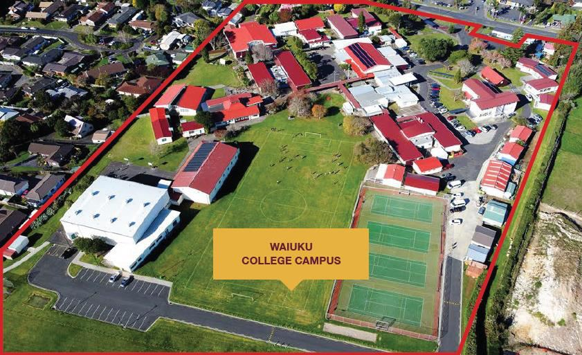

Study abroad · Waiuku College
뉴질랜드 중·고등 유학
겨울캠프가 열리는 바로 그 학교에서, 10주 한 텀부터 시작할 수 있습니다.
NZL
Who중1 ~ 고2비자 결격 사유가 없는 학생
Start연 4텀, 10주 단위
DiplomaNCEA뉴질랜드 국가 학력 인증
Cost연 3,200만원항공·비자·용돈 별도
어떤 학교인가
오클랜드 공항에서 차로 1시간, Year 9~13 남녀공학입니다. 재학생 1,000여 명 가운데 유학생을 5% 아래로 유지하고, 영어가 부족한 학생은 ESOL 수업에서 적응부터 합니다.
- 01
한 텀만 먼저
연 4텀 학제라 원하는 텀에 들어갈 수 있고, 10주만 다녀 본 뒤 계속할지 정해도 됩니다.
- 02
NCEA
뉴질랜드는 물론 미국·영국·호주·한국 대학 지원에 쓸 수 있는 학력 인증입니다.
- 03
과목 27개 이상
리더십·예술·스포츠 활동이 수업 밖에서 함께 돌아갑니다.
- 04
캠프와 같은 학교
겨울캠프로 학교와 홈스테이를 먼저 겪어 본 학생은 적응에 드는 힘이 훨씬 적습니다.

현지에서 누가 챙기나
- 01
학교의 국제학생 담당 선생님과 전직 경찰 출신 홈스테이 관리자가 나눠 맡는 이중 관리
- 02
성적 관리, 교우 관계 문제 지원, 진학 상담
- 03
급한 일은 호스트 가족, 현지 관리 선생님 순으로 바로 대응
- 04
현지 학생들과 함께 가는 캠핑 같은 적응 프로그램
비용과 학기
+연 3,200만원에 포함
- 입학 지원비
- 등록비
- 학비
- 홈스테이 배정비와 홈스테이비
- 교재비
- 여행보험료
- 교내 활동비와 교통비
- 공항 픽업비
Terms
연 4텀, 10주 단위
2026년 기준 Term 1 1/30~4/11 · Term 2 4/28~6/27 · Term 3 7/14~9/19 · Term 4 10/6~12/5 (해마다 비슷합니다)
별도 비용등록 시점과 환율에 따라 달라질 수 있습니다. 수속 대행비 150만원, 항공료, 유학비자·전자비자 진행비, 용돈, UM 서비스는 별도입니다.방학과 그 뒤현지 여름방학(한국의 12~1월)에는 귀국하거나 현지에 남는 것 중에 고릅니다. 1년이 넘는 유학은 스스로 생활을 챙길 수 있는 중학생 이상에게 권합니다.
진행 순서
문의·상담
진행 확정, 계약서 작성
지원서 작성, 성적표 제출
학비 납부, 입학허가서 수령
비자 진행, 출국 준비
출국